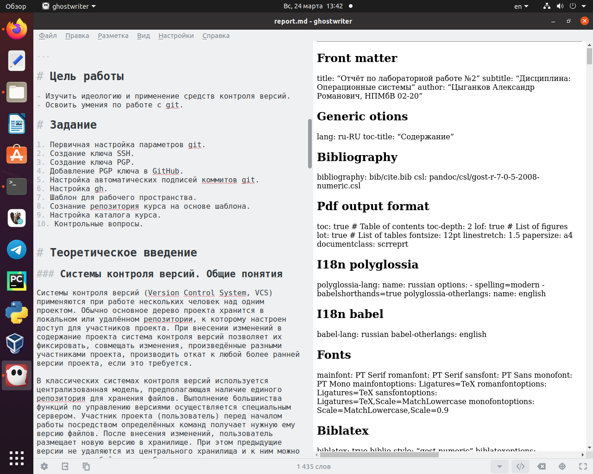
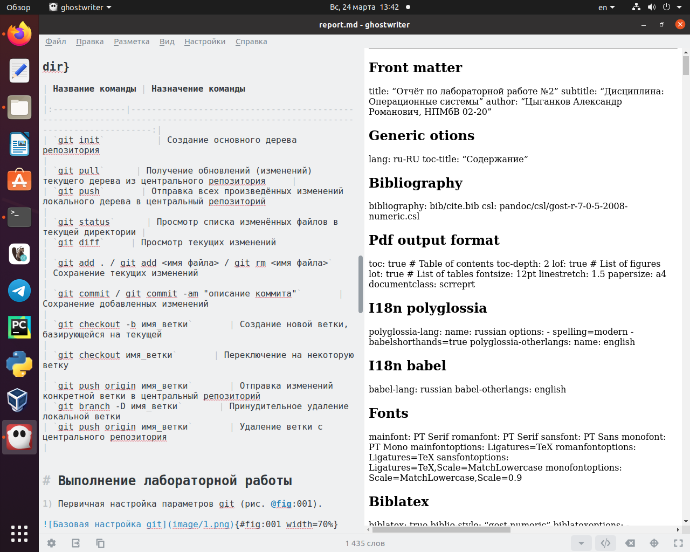
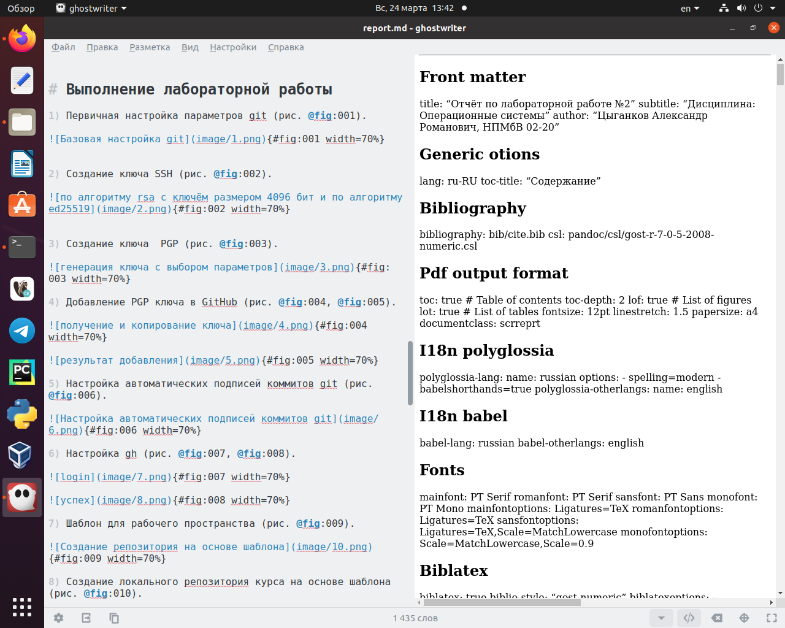
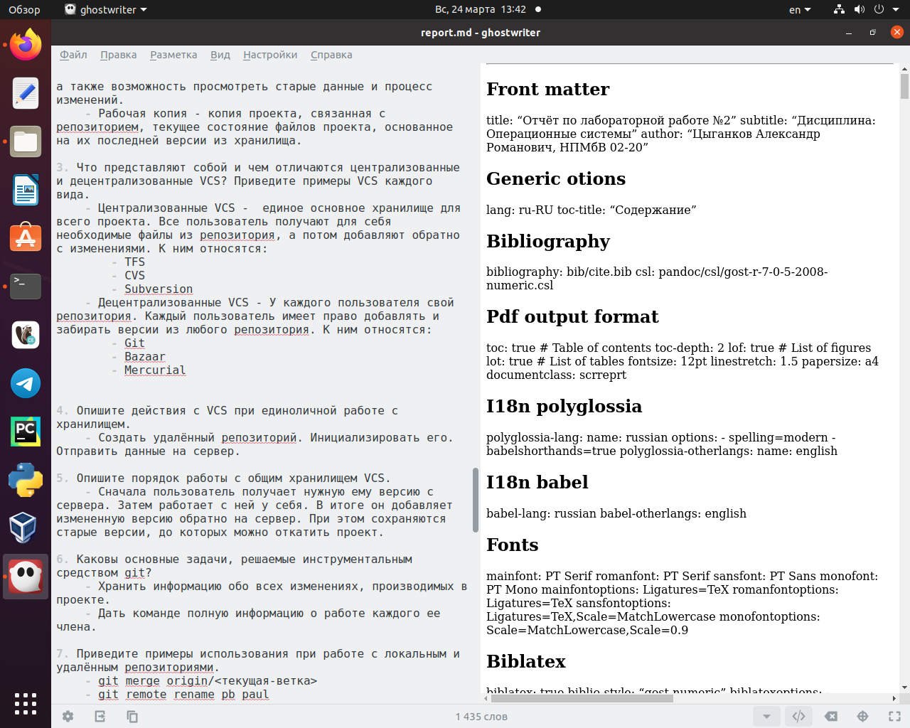
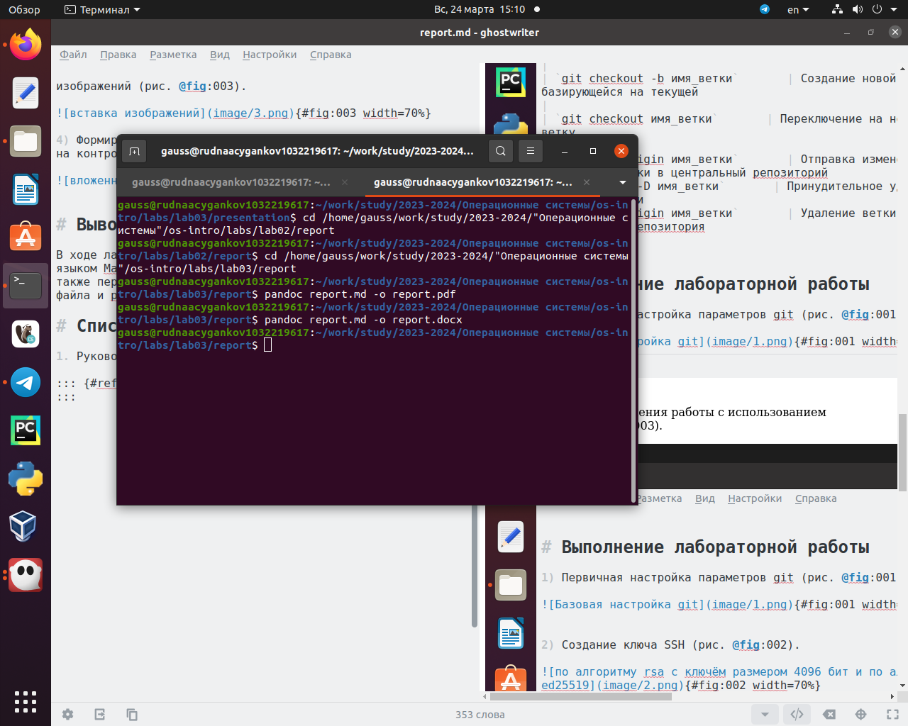

Markdown - удобный язык разметки, прекрасно конвертируемый в такие форматы, как html, pdf, docx и другие. А то, что его можно открыть в любом редакторе текста делает его удобным в использовании.
Объект и предмет исследования
Легковесный язык разметки Markdown.
Цели и задачи
Приобретение навыков при работе с легковесным языком разметки Markdown.
Формирование заголовков и задания отчета
пример заголовков и упорядоченного списка
Создание таблицы для названий команд и их назначений
пример создания таблицы
Описание хода выполнения работы с использованием изображений
вставка изображений
Формирование вложенных неупорядоченных списков при ответе на контрольные вопросы
вложенные списки
Компиляция отчёта
компиляция
Результаты
Вывод:
В ходе лабораторной мною был изучен синтаксис легковесного языка разметки Markdown и выполнена с его помощью отчёт, по предыдущей лабораторной работе. Стоит отметить, что простота и время, затраченное на это уменьшились по сравнению с обычными программами для создания отчетов.